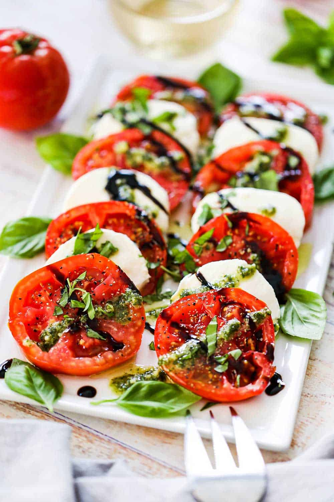

Caprese Salad

Description
A savoury and classy salad combining the umami profile of tomatos with the creamy richness of mozzarella, perfectly accented by basil leaves and a balsamic vinegar and honey reduction.
Ingredients
- Fresh mozzarella
- Tomatoes
- Basil leaves
- Balsamic vinegar
- Honey
Steps
- Cook balsamic vinegar and honey together in a small saucepan over medium heat. Once it thickens, set aside to cool.
- Cut quarter inch thick slices of the tomato and mozzarella.
- On a flat dish, start laying down slices of tomato, mozzarella, and basil leaves in alternating order.
- Once arranged, drizzle over top with the cooled balsamic vinegar and honey reduction.
- Serve on its own or with crackers!